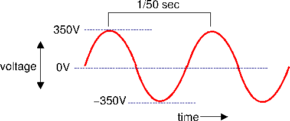
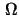

A ten-minute guide to electrical theory
This article introduces the basic principles of electricity, with emphasis on domestic electrical wiring systems. Although some calculations are involved, it's fairly elementary, so if you're a physicist you probably shouldn't be reading it. The article is aimed at DIY enthusiasts, householders, and, perhaps, electricians, who have an understanding of the practical skills involved in electrical wiring, and want to know more about the basic theory. An understanding of this theory is important if one wishes to tackle more tricky wiring applications safely.You can be an electrician without knowing much about electricity. It seems odd, but it's true. But if you do know the principles, you can do safe and practical work without memorizing a whole heap of regulations, because they're mostly derived from standard principles anyway. The key features of electricity are voltage, current, resistance, power, and frequency.
Current
An electrical current is the flow of electricity around an electrical circuit. The flow of electricity follows similar principles to the flow of water in pipes, as we shall see, with the exception that an electrical system must make a complete circuit. The circuit will contain a power source of some kind; in mains wiring the power source is the national electrical distribution system which is mostly outside our control. Of course, the distribution company don't run wires directly from the power station to our houses: there is all manner of other stuff between them and us, but that isn't all that important for the householder or domestic electrician. For most cases you can proceed as if a small power station was connected directly to the house.In domestic electrical work, current is generally measured in amps. Currents you will encounter in practice range from about 0.5 amps (through a lightbulb) to about 40 amps (an electric shower). Technically 'amps' is short for 'Ampères', but the full name is now rarely used. The mathematical symbol for current, as it is written in calculations, is not 'C' (for current) or 'A' (for amps) but in fact 'I'. This is just because the symbols 'C' and 'A' are reserved for other things. You will occasionally come across currents measured in milliamps ('mA' for short). A milliamp is a thousandth of an amp. For example, most earth-leakage breakers used in domestic wiring trip at 30 mA, which is about one thirtieth of an amp.
To get an electrical current to flow, we need a power source, and some sort of conductor. A conductor is defined as anything that can carry a flow of electricity. In electrical practice, conductors tend to be copper wire or copper bars, usually hidden away inside plastic sleeves. The sleeves are insulators, that is, materials that prevent the flow of electricity. It is the insulator that keeps the electrical current where it belongs - inside the cable.
In the UK (and everywhere else, as far as I know), electricity is distributed around the country in the form of alternating current. This means that the flow of electrical current changes direction, usually 50 or 60 times per second. There are two reasons for this, both historical. First, electrical transformers (which we need to change voltage, see below) only work with alternating currents. Second, we generate electricity by spinning wires around inside magnets (this is a bit of a simplification, of course), and this naturally produces an alternating current. At the points where the current is about to change direction, there will (for a short time) be no current flowing at all. 'Alternating current' is usually abbreviated to 'AC'.
The fact that current is alternating has little practical impact on domestic wiring. If you grab a live conductor you'll get a shock which is just as unpleasant even though, in principle, part of the time no current will be flowing. One area where the alternating nature of the electrical supply is apparent, however, is in the use of fluorescent and LED lights. Incandescent (filament) bulbs generate their light because the filament becomes white-hot. It cannot heat up and cool down as fast as the alternation of the electrical current, so the light is fairly constant. Fluorescent lights, on the other hand, produce a detectable flicker at the speed of the supply alternation. The light from a fluorescent tube will 'pulse' about 100 times per second (50 times with the supply current in one direction and 50 in the other). We can't normally see this flicker, but it does tend to make rotating machines look as though they're standing still, or going backwards. This is why we are warned not to use drilling equipment, for example, in strong fluorescent light. LED lights are potentially even more problematic in this area, but increasingly they contain electronic apparatus to smooth about the supply-related pulsation in light level.
Voltage
Voltage is a measure of the strength of an electrical supply. A voltage may exist even when no current is flowing. In older textbooks you will find terms like 'electrical potential' or 'electro-motive force', which gives a better feel for what voltage means. Strictly, a voltage is only defined between two points. When only one point is specified, we tacitly assume that the other point is the earth (which means exactly what it says: the ground beneath our feet). The earth is not a very good conductor of electricity, but there's an awful lot of it, which makes up for this poor conductivity to a certain extent. So when I say 'there's 230 volts at this point', what I really mean is that the voltage difference between this point and earth is 230 volts (it's a bit more complicated than this in practice, as we shall see).Voltage is measured in volts, which is abbreviated to 'V'. So '230V' means '230 volts'. The mathematical symbol for voltage is also 'V'. Incidentally, although you'll hear UK electricians talking about '240 volt' mains, in fact the UK domestic mains supply voltage has been 230 volts for about twenty years, to make our electrical equipment compatible with that of the rest of Europe.
To get an alternating current, we need an alternating voltage. So the electrical mains voltage will cycle from about 325 volts, to zero, to -325 volts, then back to zero, and so on, 50 times per second. This is shown in figure 1
|  |
Why is the maximum voltage 325 volts and not 230 volts as we normally say? It turns out that this waveform (which varies between high and low voltages) carries the same amount of energy as a constant voltage about 70% the size. So when we talk about a 230V AC supply, we mean a supply that would carry the same energy as a constant voltage of 230 V. This actually means an AC voltage that reaches 325 volts at certain points, and is zero at others. Electrical engineers refer to the '230 volt' figure as the 'root mean square' voltage, for reasons that you'll find in an engineering textbook. This is abbreviated to 'rms', so you'll sometimes seen the domestic mains voltage written as '230 Vrms'. Unless indicated otherwise, you can expect voltages and currents described in electrical manuals and manufacturers' catalogues to be 'rms' figures, and then ignore this fact completely. The reason you can ignore it is that -- in domestic work -- so long as all measurements of voltage, current, and power are rms measurements, all the calculations still give correct answers.
230 volts is quite enough to give you a nasty shock, and sometimes these shocks can be fatal. In North America, and many other parts of the world, mains supplies are usually 110V, and this is sometimes the case in Europe and the UK for industrial installations, where equipment is expected to be operated in wet conditions. For reasons that will be explained later, it is more efficient (i.e., less wasteful of energy) to distribute electricity at a higher voltage, but increased efficiency is gained at the expense of safety.
Resistance
We have already mentioned electrical materials which are conductors (that allow an electrical current to flow easily) and insulators (that don't). In reality nothing is a perfect insulator or a perfect conductor: most materials have a certain degree of resistance, and lie on a scale somewhere between a perfect insulator and a perfect conductor. Materials with high resistance tend to be insulators; those with low resistance tend to be conductors. Even copper electrical cables have a certain amount of resistance. Resistance is measured in ohms, which is either abbreviated to '', or to 'R' if your word processor doesn't have a '' symbol1. The mathematical symbol is the letter 'R' as well. One ohm is a lot of resistance in electrical practice; we normally like our electrical conductors to have resistances much less than an ohm, for reasons that will be explained.The relationship between current, voltage and resistance
You'll not be surprised to learn, I hope, that these important quantities - voltage, current and resistance - are related. It turns out that the voltage can be found by multiplying the current (in amps) by the resistance (in ohms). In symbols this isV = I RIf algebra puts you off, don't worry, it says exactly the same thing as the 'voltage is current times resistance', but in a shorter format.
In case you're interested, this simple formula is called 'Ohm's law', and is probably the most important thing ever discovered in electrical engineering. In domestic wiring, 'V' will nearly always be '230' (volts), so in practice we usually want to work out current (knowing resistance), or vice-versa. We can write Ohm's law in two different ways:
I = V / Rand
R = V / ISo if we have, say, a lightbulb which has a filament with a resistance of 500 ohms at running temperature, what current flows in it? Since we know that
I = V / R and V is 230, and R (resistance) is 500, then I is 230/500, which is 0.46 amps,
or about half an amp.
It may help to understand these relationships by comparing them to a system that may be more familiar. Figure 2 shows a water tank suspended off the ground, connected to a length of pipe. Because the pipe is open at the end, water will run down in and make a puddle on the floor.
In this system, the height of the water tank is analogous to the voltage. If we double the height of the tank (from the end of the pipe), this is equivalent to doubling the voltage. If we do this, all other things being equal, the water will flow down the pipe twice as fast as before. This is why, if you have a water tank in your attic, you will usually get a greater flow of water from a downstairs tap than from an upstairs tap: the height of the water tank above the tap is about twice as large.
The flow of water through the pipe is analogous to the flow of current. If we double the voltage, we double the current (if the resistance remains constant).
The pipe attached to the tank represents the resistance. It is very similar to an electrical resistance. For example, if we double the length of the pipe, the flow of water will decrease to about half its previous value. There's twice as much pipe, therefore twice as much resistance. If we make the pipe thinner, this will also slow down the flow. This is true of electrical cables as well. A longer cable has more resistance than a shorter one, and a thin cable has more resistance than a fat one (but of course it is the thickness of copper that is important, not the thickness of the insulating plastic). Cable sizes are expressed in terms of the cross-section area of copper in the live and neutral conductors, measured in square millimetres (abbreviated to 'mm2' or 'sq mm'). Electrical power rings are very commonly made from 2.5 mm2 cable. This means that each of the live and neutral conductors has an area of 2.5 mm2. You'll frequently hear this abbreviated to '2.5 millimetre' or '2.5 mil'. Strictly speaking, this is wrong: the conductors are not 2.5 millimetres across, they have an area of 2.5 square millimetres. This slang does not normally cause problems in practice.
Electrical circuits
The main difference between an electrical system, and the water system shown in figure 2 is that electrical current must flow in a circuit. Electricity can't form a puddle in the same way that water can; it has to be confined to conductors. So in some senses a better analogy might be a central heating system, where water flows around a set of pipes and radiators, driven by a pump. In any event, if a circuit is not complete, no current can flow. This is good, because it means we can uses switches to turn things on and off. Traditionally a switch is a mechanical contact: pressing it or moving the lever moves a piece of copper in such a way as to open or close a circuit. It is now possible to get electronic switching devices that have no moving parts.A practical electrical circuit consists of at least the following things: a power source, some conductors, and an electrical appliance (see figure 3).
In a domestic mains system, the 'power source' is essentially the wires that bring the electrical supply into the house (and all the power stations, etc., that they're connected to). Since we don't have any control over that, we can usefully think of it as a 230 volt power source without worrying to much about it2.
This circuit will power the appliance (whatever it is) and, because there is not even a switch, it will continue to power it forever, or until the power runs out. Because we are dealing with alternating currents, the flow of current around the circuit is constantly changing direction (but this does not cause any problem, as discussed above).
Suppose we want to connect two appliances in this circuit (after all, a house with only one lightbulb isn't going to be much use). How are we to accomplish this? There seem to be two basic strategies. The first, called 'series' wiring is shown in figure 4. The second, 'parallel' wiring, is shown in figure 5.
There is a place for both these schemes, but in nearly all domestic wiring we will want to wire things up in parallel. Why? The problem with the series arrangement is that all the appliances in the system get the same current. This must be the case, because there is only one set of wires to carry the current around. Now suppose one appliance is a lightbulb and the other is an electric shower. The lightbulb wants about half an amp, while the electric shower wants about 40 amps. There's no way to arrange them so they both get the current they want. What would happen in practice? Well, the resistance of the lightbulb is huge compared to that of the electric shower so, in practice, the current in the circuit will the same as that for a lightbulb: about half an amp. That isn't going to warm your water very well.
In a parallel system, all appliances get the same voltage across them. In the UK this means the 230 volt mains supply. Each appliance will have a particular resistance, and therefore get a current which is appropriate for its needs.
In practice, we couldn't use the same wires to carry electricity to both a lightbulb and an electric shower, because the shower would need very thick cables, as will be explained, and it would uneconomical to wire up a lighting system using such heavy-duty cable.
Ring wiring
We've seen how you can connect electrical appliances in parallel, but what happens if you connect cables in parallel? In other words, rather than running one pair of wires to each appliance, why not run two? How would this help? Well, if there are two sets of conductors running to each appliance, this is exactly the same as having one set of conductors but with twice as much copper area. And a conductor with twice the area can carry twice the current (for reasons I'll explain later). So if we double the number of cables connecting each appliance, we double the amount of current they can carry. Another way of looking at this is to say that if we double the number of cables, they only need to have half the area, and thin cable is cheaper than thick cable.This principle is exploited in the wiring of 'ring' circuits in domestic installations. Rings are almost always used in wiring power outlets, and sometime in lighting as well. In a ring, every socket outlet has not just one live, neutral, and earth connection back to the supply, but two; this is because the ring goes all around the area served and then back to the supply.
This also explains why it is so dangerous to allow a ring to become broken. In this situation there will only be one set of conductors serving each power outlet. Some outlets will be on one side of the break, and some will be on the other. So all will get a supply, and it isn't obvious that anything is wrong. However, a double-gang 13-amp socket can draw a current of 26 amps if two heavy-duty appliances are plugged in, and this may well be too high for a single run of 2.5 mm2 cable, but well within the capabilities of two such cables. There is a very real risk of the cable overheating. In normal circumstances it is impossible to plug in enough appliances to damage the cabling. Why? Because the fuse or MCB has been chosen to suit the current rating of the cable (see below). In a ring system, we will choose the fuse or MCB to suit the capacity of the ring, not a single cable. The fuse will normally be rated to trip at about 30A, which is well within the capacity of the ring, but close to, or above, the capacity of the single cable. So the fuse won't protect us from plugging in two 13-amp appliances: 26 amps isn't enough to trip the fuse, and the cable will overheat instead.
Power
Power is the rate at which an electrical appliance can consume electrical energy, or the rate at which a generator can produce it. In the UK (and probably everywhere else) we are charged for our electricity in terms of energy: the more energy we use, the more we pay. A high-power appliance uses energy more rapidly than a low-power one, and therefore costs more to run.Power is measured in watts, or in kilowatts. A kilowatt is a thousand watts, and is a more useful figure when dealing with electric fires and heaters. The abbreviations are 'W' (for watts) and 'kW' (for kilowatts). Note the positions of the capital letters here. It is technically incorrect to abbreviate kilowatts to 'KW' (although plenty of people do, including electricity supply companies).
The mathematical symbol for power is 'P'.
If we know the voltage and current in an electrical appliance we can work out its power. It turns out that power (in watts) is equal to the voltage (in volts) multiplied by the current (in amps). In symbols this is:
P = V ISo, taking the lightbulb case again, its current (as we worked out earlier) was 0.5 amps, the voltage is (as ever) 230 volts, so the power is 115 watts (0.5 x 230)3. I don't think you can buy a 115 W lightbulb, so what current flows in a 100 W lightbulb? We can write the formula above in two other ways:
V = P / Iand
I = P / VThe second of these is what we need: it gives us current ('I') if we know P and V. So the current in the 100 W bulb is (100 / 230) amps, or about 0.43 amps.
Here's another example. What rating of fuse do I need in a plug that supplies an electrical kettle? Let's suppose the kettle has a power rating of 2.5 kW (which is common). Since
I = P / V,
P is 2500 (watts), and V is 230 (volts), we have
I = 2500 / 230, which is about 10.9 amps. Since plug
fuses are only usually only available in ratings of 3, 5, and 13 amps,
we need a 13-amp fuse, this being the next rating up from the
calculated 10.9 amps. A 5-amp fuse would probably blow quite
quickly, but we'll come onto that in a moment.
A lightbulb converts electrical energy into light and heat. A filament bulb is very inefficient, in fact, producing about 50 times more heat than light. In fact all electrical equipment gets hot in use, including wires. The amount of energy that goes into heat can always be calculated if we know the voltage and current, but for electrical cables it's easier to do it a different way. Since we know that
V = I R (from above) and that
P = V I, then
a bit of juggling symbols shows that
P = I2 Ror in words: power is given by multiplying the square of the current by the resistance. (The square of anything is that number multiplied by itself). Let's take an example.
Suppose an electrical cable had a resistance of 2 ohms. This cable is carrying a current of 13 amps (which is the maximum allowed for a plug-in appliance). How much power is turned into heat by the cable?
Power is given by the square of the current times the resistance, so in this case is 13 x 13 x 2, which is 338 watts. That's about the same as three lightbulbs. So the electrical cable will get about as hot as three lightbulbs. Apart from being a complete waste of energy (which you're paying for), this may be enough heat to melt the cable, which would be a Bad Thing (especially if it's underground). This explains why we need fat cables for high-power appliances and can get away with thin cables for low-power ones. Fat cables have lower resistances, and therefore less energy is wasted as heat, and they don't get hot enough to melt. Is it all right to use fat cables for low-power appliances? Well, it doesn't compromise safety, but it's not very cost-effective. Thick cables are much more expensive than thin ones. Another problem is that thick cables are much harder to work with than thin ones.
Energy, and your electricity bill
Electrical engineers measure electrical energy in kilowatt-hours. One kilowatt-hour, which is the same as 1000 watt-hours, is sufficient energy to power a one kilowatt appliance for one hour. Energy of 1 kilowatt-hour may be consumed by an appliance that takes 1000 watts running for 1 hour, or an appliance that takes 1 watt running for 1000 hours, or an appliance that takes 100 watts running for 10 hours, or anything in between so long as the time multiplied by the power comes to 1000.The electricity bill does not distinguish between high-power and low-power appliances, only the total energy. You will normally be charged a certain amount for each kilowatt-hour of energy, plus a certain fixed amount, in each bill. Many supply companies are now offering charging schemes that remove the fixed amount (standing charge) which is good news for people who are careful with electricity4.
Here's an example. Suppose your supply company charges 10 pence per kilowatt hour. How much does it cost to run a 40-amp electric shower for half an hour? Since power is voltage times current, the shower will consume 40 x 230 watts. That's 9200 watts, or 9.2 kilowatts. So it would cost 9.2 times ten pence to run it for one hour, or half that for half an hour. So the total cost is (1/2) x 9.2 x 10 pence, or 46 pence. This is about the same price as running a 100-watt lightbulb for two days.
Live, neutral and earth
Three main electrical conductors enter a domestic property, and are distributed throughout it. These conductors are referred to as live, neutral and earth.The live and neutral conductors should be considered as the 'power supply' to the premises. The voltage between live and neutral will generally be about 230 V AC. In all normal circumstances, current that enters the premises on the live conductor leaves it on the neutral, and vice-versa. The earth conductor carries negligible current except in fault situations.
Although the live and neutral conductors both carry current, only the live conductor is at a voltage that could be harmful. The neutral conductor will normally be at the same voltage as the earth conductor. In fact, at some point the neutral and the earth will be connected together. This situation is shown in figure 6
The figure grossly oversimplifies the real situation, of course; we don't each have an electrical power station in the garden, delivering electricity at 230 volts. In reality the supplier's distribution system will be a complex mixture of cables, transformers and switchgear, but this need not concern us. In practice, we can assume that the electricity supply takes the form shown in figure 6.
Note that the supplier's equipment is connected to earth at one side, and this is what distinguishes 'live' from 'neutral'. The 'neutral' side is connected to earth at the supplier's side. Your premises will also have a separate earth connection, either brought in by the electricity supplier's cable, or attached to a stake driven into the ground (which is the arrangement shown in the figure above). The different methods of supplying an earth are sometimes important, particularly when calculating whether we need more electrical shock protection than earthing alone can provide.
From the main cable entering the premises, live, neutral and earth conductors will be distributed to every electrical appliance using a variety of different cable types and sizes.
Fuses and over-current protection
We have seen that electrical current causes a heating effect, and if the current is large, or the electrical resistance high, this effect can be enough to cause damage or a fire. Fire, as a result of overheating, is one of the main risks from sloppy electrical work. However, the tendency of a high current to cause a wire to melt and break is put to good use in the design of the fuse.A fuse is a simple device that will limit the current flowing in an electrical circuit. In practice a fuse normally consists of a piece of wire of exactly the right length and thickness to overheat and break when the current gets to a particular level. If an excessive current occurs, we hope the fuse will 'blow' rather than some other part of the circuit overheating. This is called over-current protection.
For now, the important thing to remember is that the fuse must be able to withstand a higher current than the appliances to which it is connected (otherwise it would blow unnecessarily), but a lower current than the cables which connect them. This ensures that in the event of a fault, the fuse will blow before the cable is damaged.
While fuses are still widely used, miniature circuit breakers (MCBs) are now increasingly replacing them.
On the whole it is moderate overheating that is the problem in electrical wiring, not huge current overloads. If you get a short-circuit between live and neutral in a power outlet, for example, the current that will flow will be immense. Without a fuse it could easily rise to thousands of amps. Now, although this would be inconvenient, oddly enough it probably wouldn't be all that dangerous, because the cable will simply melt right through in a fraction of a second and break the circuit. There would be an enormous bang and a puff of smoke and that would be the end of the problem. It will be the beginning of your hard work, of course, as you struggle to find which floorboard the burned-out cable is under, but that's a different matter.
On the other hand, if you ask a cable that is rated for a maximum of 6 amps to carry a current of 13 amps, and you have a 32-amp fuse or MCB, then you get no overcurrent protection at all. The cable probably won't fail with a huge bang: it will gradually heat up to about 250 degrees celcius, at which point the copper will melt. However, it may take tens of minutes to do so. In the meantime, you've got something that is hot enough to combust wood clamped to your joists. See the problem? Probably the most common cause of this problem -- apart from outright stupid wiring or fuse selection -- is ring circuits breaking and thereby halving their current capacities.
Summary
You can carry out electrical wiring using common sense and DIY manuals. However, if you understand a bit about electrical theory then you can work out how thick cables should be, what size fuses or MCBs you need, how many power sockets you can run from a 32-amp fuse, etc. This isn't stuff you'll normally find out from DIY guides, because the publishers think you're too thick to understand. In fact, if you can multiply and divide, then you can work these things out.Footnotes
- ... symbol1
- is the Greek letter pronounced 'omega', which sounds a bit like 'ohm'. Oh, how we laughed...
- ... it2
- We can't completely ignore the parts of the electrical system outside the house, unfortunately. For example, the resistance of the external part has an effect on the current that will flow in a short-circuit, and has implications for selection of fuses and cables.
- ... 230)3
- This isn't exactly true, but in domestic situations it's close enough not to matter. If you want to know more, look up 'power factor' in a physics textbook.
- ... electricity4
- In schemes like this, if you halve your electricity consumption you halve your bill. With a standing charge, the saving is not as great, because the standing charge does not go down